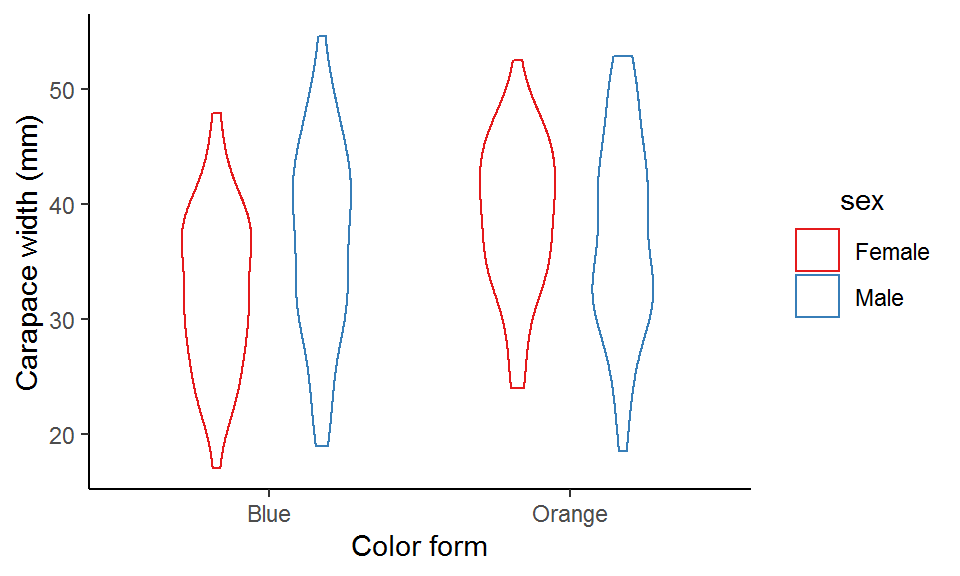
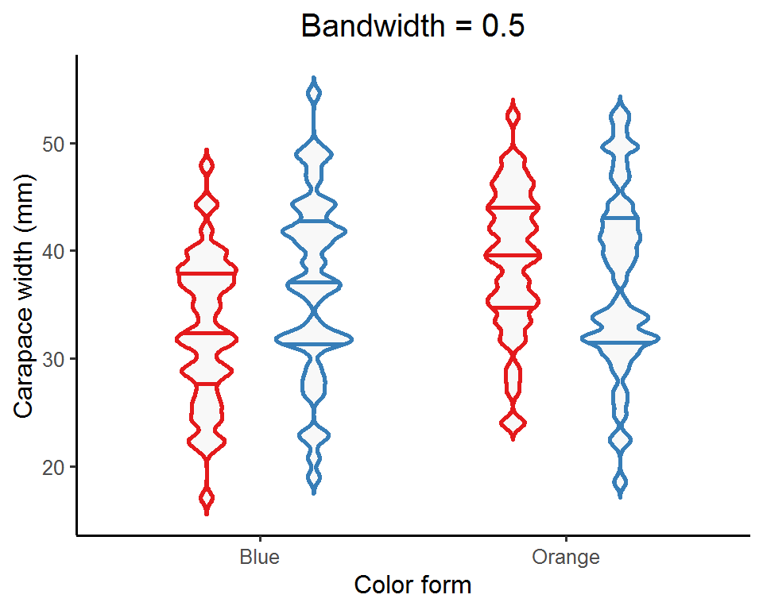
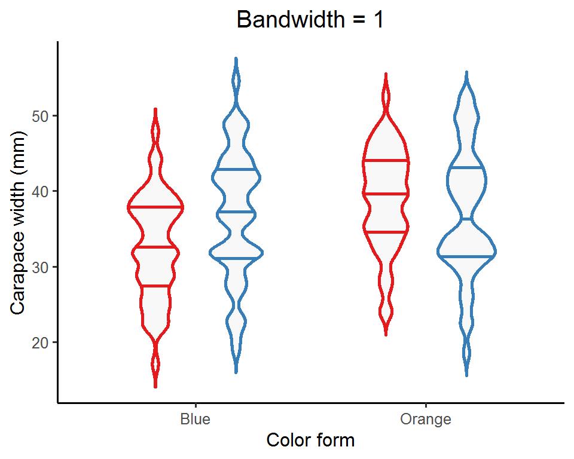
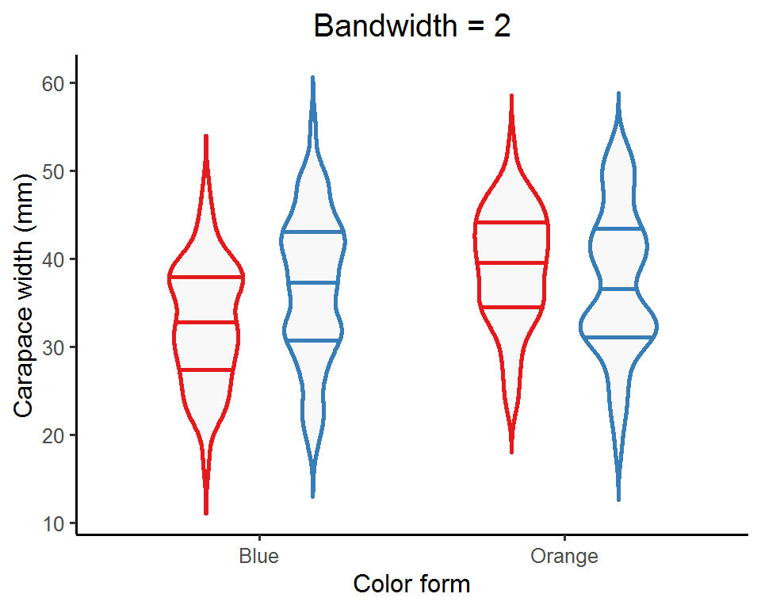

Introduction
Data exploration is the very first step for any data analysis project, allowing us to grasp an idea of what our data look like before proceeding to further analyses. We can use some simple summary statistics (e.g., mean, SD, the five-number summary 1) to do so. Alternatively, we can plot the data to really show their “true colors” and potentially uncover some interesting/weird patterns (to see is to believe right?!). This is especially handy for large datasets where it is difficult to inspect each data point.
There are quite a few types of graphs we can use to visualize the distribution of (continuous) data. In this post, I will show you some commonly-used graphs, first the basic ones (strip plot, box plot, and point-range plot), and then to our focus—the violin plot.
Some basic visualizations for data distributions
We will be using the crabs dataset from the MASS package as our example data. This dataset contains five morphological measurements (frontal lobe size, rear width, carapace length, carapace width, and body depth) of 50 purple rock crab (Leptograpsus variegatus) individuals for each of the two color forms (blue and orange) and sexes (male and female). An interesting question here is whether the carapace width, an important indicator for individuals’ growth and development, differ between sexes for the two color forms. Before conducting formal statistical tests, it would be great to first visualize the carapace width by color form and sex so that we can get an idea of what the data look like.
Let’s begin with some basic and most-commonly used graphs:
(1) Strip plot (2) Box plot (3) Point-range plot
(1) Strip plot
A strip plot is no more than drawing the raw data points along the axis to show their distribution and range. In fact, it is simply a special version of scatterplot where one dimension (usually x-axis) is fixed to one or a few positions.
library(MASS) # For the "crabs" dataset
library(tidyverse)
crabs_df <- crabs %>%
select(sp, sex, CW) %>%
transmute(color = case_when(sp == "B" ~ "Blue",
sp == "O" ~ "Orange"),
sex = case_when(sex == "M" ~ "Male",
sex == "F" ~ "Female"),
carapace_width = CW)
ggplot(data = crabs_df, aes(x = color, y = carapace_width, color = sex)) +
geom_point(position = position_jitterdodge(jitter.width = 0.1, dodge.width = 0.7)) +
scale_color_brewer(palette = "Set1") +
labs(x = "Color form", y = "Carapace width (mm)") +
theme_classic() +
theme(legend.title = element_text(hjust = 0.5))

Here I use position_jitterdodge() to dodge the points for the two sexes within each color form so that they won’t overlap with each other at the same x-axis position, and also to jitter the points (i.e., adding some random noise) within each sex to prevent overplotting (points lying on top of each other).
As you can see, blue males tend have a wider carapace than blue females, whereas orange males and females seem to have similar carapace widths.
(2) Box plot
A common alternative to strip plot is the box plot, where the data are displayed as a box and two whiskers based on the five-number summary (remember this term in the “Introduction”?).
ggplot(data = crabs_df, aes(x = color, y = carapace_width, color = sex)) +
geom_boxplot(position = position_dodge(width = 0.7), width = 0.5) +
scale_color_brewer(palette = "Set1") +
labs(x = "Color form", y = "Carapace width (mm)") +
theme_classic() +
theme(legend.title = element_text(hjust = 0.5))
We can see that the median carapace width of blue males is larger than that of the blue females, while the opposite is true for the orange form.
(3) Point-range plot
Yet another alternative to strip plot is the point-range plot, where the data are displayed as a mean and some measure of uncertainty (e.g., SD, SE, and confidence interval).
ggplot(data = crabs_df, aes(x = color, y = carapace_width, color = sex)) +
stat_summary(geom = "pointrange", fun.data = "mean_se", position = position_dodge(width = 0.5)) + # The bars represent SE
scale_color_brewer(palette = "Set1") +
labs(x = "Color form", y = "Carapace width (mm)") +
theme_classic() +
theme(legend.title = element_text(hjust = 0.5))
Apparently, blue males are on average wider than blue females and vice versa for the orange form.
Violin plot
Now let’s get down to our main topic—the violin plot. A violin plot displays the kernel density estimates of the data as two symmetrical probability curves, forming a violin-like area and hence the name.
A violin plot provides more information than a box plot or a point-range plot does, as it shows the full distribution of the data rather than just a few summary statistics. In particular, when the data distribution is bi-modal or multi-modal (i.e., more than one peak), a violin plot can show the positions of the peaks as well as their relative magnitudes, which are otherwise not revealed by a box plot or a point-range plot.
There is a trade-off though. Depending on the data, the probability curves can actually be quite curly and you might want to dispose of the “malformed” violin if that’s the case.
To make a violin plot with ggplot, simply use the ggplot2 built-in function geom_violin():
ggplot(data = crabs_df, aes(x = color, y = carapace_width, color = sex)) +
geom_violin(position = position_dodge(width = 0.7), width = 0.5) +
scale_color_brewer(palette = "Set1") +
labs(x = "Color form", y = "Carapace width (mm)") +
theme_classic() +
theme(legend.title = element_text(hjust = 0.5))

This violin plot looks a bit plain. We can modify some arguments in geom_violin() to make it more appealing. For example, we can turn off the trim argument to allow for full density curves beyond the data range, add lines inside the violins to denote the quartiles, and fill the empty violins with some colors to make them more “concrete”.
ggplot(data = crabs_df, aes(x = color, y = carapace_width, color = sex)) +
geom_violin(position = position_dodge(width = 0.7),
width = 0.5,
size = 1, # Thicker lines
trim = F, # Don't trim off the tails of density curves beyond data range
scale = "area", # All violins have the same area size
draw_quantiles = c(0.25, 0.5, 0.75), # Add quartiles to the violins
fill = alpha("grey", 0.3)) + # Fill the violins
scale_color_brewer(palette = "Set1") +
labs(x = "Color form", y = "Carapace width (mm)") +
theme_classic() +
theme(legend.title = element_text(hjust = 0.5))
An important aspect of a violin plot is the density curves, determined by two factors: bandwidth and kernel (this is a bit mathy; see this post for details if interested). Bandwidth is the easier (and also straightforward) one to adjust. It is a real positive number and controls the smoothness of the density estimates: a smaller value gives a “spikier” curve, whereas a larger value results in a “smoother” look.
map(c(0.5, 1, 2, 5), function(bw_values){ # Pass a set of bandwidth values to the ggplot
ggplot(data = crabs_df, aes(x = color, y = carapace_width, color = sex)) +
geom_violin(position = position_dodge(width = 0.7),
width = 0.5,
size = 1,
trim = F,
scale = "area",
draw_quantiles = c(0.25, 0.5, 0.75),
fill = alpha("grey", 0.3),
bw = bw_values) + # Control the bandwidth
scale_color_brewer(palette = "Set1") +
labs(x = "Color form", y = "Carapace width (mm)", title = paste0("Bandwidth = ", bw_values)) +
guides(color = "none") +
theme_classic(base_size = 12) +
theme(legend.title = element_text(hjust = 0.5),
plot.title = element_text(hjust = 0.5, size = 15))
})

Depending on the nature of the data, you might want to try out a few bandwidth values and see which one best captures the data distribution. Or, you can just do nothing and let ggplot pick a default one for you!
Variants of violin plots
Let’s now go a bit further and take a look at some cool variants of violin plots.
(1) Overlay other plot types
We can add strip plots, box plots, or point-range plots to the violin plots to show more information about the data.
### Violin plot + strip plot
ggplot(data = crabs_df, aes(x = color, y = carapace_width, color = sex)) +
geom_violin(position = position_dodge(width = 0.7),
width = 0.7,
size = 1,
trim = F,
scale = "area") +
geom_point(position = position_jitterdodge(jitter.width = 0.05, dodge.width = 0.7), show.legend = FALSE) +
scale_color_brewer(palette = "Set1") +
labs(x = "Color form", y = "Carapace width (mm)") +
theme_classic() +
theme(legend.title = element_text(hjust = 0.5))
### Violin plot + box plot
ggplot(data = crabs_df, aes(x = color, y = carapace_width, color = sex)) +
geom_violin(position = position_dodge(width = 0.7),
width = 0.7,
size = 1,
trim = F,
scale = "area") +
geom_boxplot(position = position_dodge(width = 0.7), width = 0.2, show.legend = FALSE) +
scale_color_brewer(palette = "Set1") +
labs(x = "Color form", y = "Carapace width (mm)") +
theme_classic() +
theme(legend.title = element_text(hjust = 0.5))
### Violin plot + point-range plot
ggplot(data = crabs_df, aes(x = color, y = carapace_width, color = sex)) +
geom_violin(position = position_dodge(width = 0.7),
width = 0.7,
size = 1,
trim = F,
scale = "area") +
stat_summary(geom = "pointrange",
fun = mean,
fun.min = function(x) mean(x) - sd(x), # The bars represent SD
fun.max = function(x) mean(x) + sd(x),
position = position_dodge(width = 0.7), show.legend = FALSE) +
scale_color_brewer(palette = "Set1") +
labs(x = "Color form", y = "Carapace width (mm)") +
theme_classic() +
theme(legend.title = element_text(hjust = 0.5))

(2) Hybrid violin plot
When there are two groups (violins) within each x-axis category (e.g., “male” and “female” in this example), we can halve the two violins and combine them into one hybrid violin for a better comparison.
There is no direct function or argument to create a hybrid violin plot, and so we would need to code it a bit: first compute the kernel density estimates manually, then do some data manipulations, and finally map the processed data to the plot. I have wrapped these steps into a function called geom_hybrid_violin(). See the comments in the below code chuck for what the functions actually does under the hood!
By the way, there is also a function called geom_split_violin() on stackoverflow. It is basically an extended geom of the original geom_violin(), built using the ggproto system (quite an advanced topic; saved for future posts!). You can simply copy and paste the code into your R session and it is ready for use.
### Create the function "geom_hybrid_violin()"
geom_hybrid_violin <- function(data, # A dataset you would like to visualize
x_var, # An unquoted name of the (categorical) variable for the x-axis
hybrid_var, # An unquoted name of the (binary) variable of which the two levels are to be compared with each other
y_var, # An unquoted name of the (continuous) variable of which the distribution is to be visualized
bandwidth = NULL, # A real positive number specifying the bandwidth for kernel density estimates
width_adj = 1, # A real positive number multiplied with the density estimates to adjust the width of the violins (1 means no adjustment)
x_lab, # A quoted string as x-axis label
y_lab){ # A quoted string as y-axis label
# Step 1. Quote the arguments
x_var <- enquo(x_var)
hybrid_var <- enquo(hybrid_var)
y_var <- enquo(y_var)
# Step 2. Convert the x_var and hybrid_var into factors
# The "!!" (pronounced "bang bang") symbol is to unquote the variables so that they can be evaluated in a non-standard way
data_fct <- data %>% mutate(!!x_var := as.factor(!!x_var),
!!hybrid_var := as.factor(!!hybrid_var))
# Step 3. Get the levels of the x_var and hybrid_var
x_var_levels <- select(data_fct, !!x_var) %>% pull() %>% levels()
hybrid_var_levels <- select(data_fct, !!hybrid_var) %>% pull() %>% levels()
# Step 4. Compute kernel density estimates by x_vars and hybrid_var
dens_df <- data_fct %>%
group_by(!!x_var, !!hybrid_var) %>%
summarize(prob_raw = ifelse(is.null(bandwidth), list(density(!!y_var)$y), list(density(!!y_var, bw = bandwidth)$y)),
y = ifelse(is.null(bandwidth), list(density(!!y_var)$x), list(density(!!y_var, bw = bandwidth)$x))) %>%
unnest(cols = c(prob_raw, y)) %>%
mutate(prob_adj = prob_raw*width_adj, # Multiply the original density estimates by a constant to adjust the violin width
prob_flip = ifelse(!!hybrid_var == hybrid_var_levels[1], prob_adj*-1, prob_adj), # Flip the curve of the density estimates for the level on the right-hand side
prob_final = prob_flip + as.numeric(!!x_var)) # Spread out the density estimates for each level of x_var according to the order in which they appear along the x-axis
# Step 5. Plot the data using geom_polygon
p <- ggplot(data = dens_df, aes(x = prob_final, y = y,
color = !!hybrid_var,
fill = after_scale(alpha(color, 0.8)),
group = interaction(!!x_var, !!hybrid_var))) +
geom_polygon() +
scale_color_brewer(palette = "Set1") +
scale_fill_brewer(palette = "Set1") +
scale_x_continuous(limits = c(0.5, length(x_var_levels)+0.5), breaks = 1:length(x_var_levels), labels = x_var_levels) + # Specify the positions along the x-axis at which the violins are displayed
labs(x = x_lab, y = y_lab) +
theme_classic() +
theme(legend.title = element_text(hjust = 0.5))
return(p)
}
### Pass the data to the function and specify the arguments
geom_hybrid_violin(data = crabs_df,
x_var = color,
hybrid_var = sex,
y_var = carapace_width,
bandwidth = 2,
width_adj = 3,
x_lab = "Color form",
y_lab = "Carapace width (mm)")
(3) Wilkinson dot plot and beeswarm plot
Instead of showing the data distribution as curves and areas, we can use dots to represent the density estimates. This kind of plot is called a “Wilkinson dot plot” or a “beeswarm plot” (it does look like a swarm of bees!). In fact, it is a modified strip plot and you can think of it as the “discrete” version of the violin plot.
There are two ways for creating a Wilkinson dot plot or a beeswarm plot: one is using the ggplot2 built-in function geom_dotplot(), and the other is the geom_beeswarm() or geom_quasirandom() from the extension package ggbeeswarm.
### geom_dotplot()
ggplot(data = crabs_df, aes(x = color, y = carapace_width, color = sex, fill = sex)) +
geom_dotplot(binaxis = "y", stackdir = "center", position = position_dodge(width = 0.8), dotsize = 0.7) +
scale_color_brewer(palette = "Set1") +
scale_fill_brewer(palette = "Set1") +
labs(x = "Color form", y = "Carapace width (mm)", title = "geom_dotplot()") +
theme_classic() +
theme(legend.title = element_text(hjust = 0.5),
plot.title = element_text(hjust = 0.5, size = 15))
### geom_beeswarm()
# install.packages("ggbeeswarm")
library(ggbeeswarm)
ggplot(data = crabs_df, aes(x = color, y = carapace_width, color = sex, fill = sex)) +
geom_beeswarm(cex = 2.5, dodge.width = 0.8, size = 2) +
scale_color_brewer(palette = "Set1") +
labs(x = "Color form", y = "Carapace width (mm)", title = "geom_beeswarm()") +
theme_classic() +
theme(legend.title = element_text(hjust = 0.5),
plot.title = element_text(hjust = 0.5, size = 15))
### geom_quasirandom() with bandwidth = 0.1
ggplot(data = crabs_df, aes(x = color, y = carapace_width, color = sex, fill = sex)) +
geom_quasirandom(bandwidth = 0.1, nbins = 100, cex = 2, dodge.width = 0.8, method = "smiley") +
scale_color_brewer(palette = "Set1") +
labs(x = "Color form", y = "Carapace width (mm)", title = "geom_quasirandom() \n (bandwidth = 0.1)") +
theme_classic() +
theme(legend.title = element_text(hjust = 0.5),
plot.title = element_text(hjust = 0.5, size = 15))
### geom_quasirandom() with bandwidth = 2
ggplot(data = crabs_df, aes(x = color, y = carapace_width, color = sex, fill = sex)) +
geom_quasirandom(bandwidth = 2, nbins = 100, cex = 2, dodge.width = 0.8, method = "smiley") +
scale_color_brewer(palette = "Set1") +
labs(x = "Color form", y = "Carapace width (mm)", title = "geom_quasirandom() \n (bandwidth = 2)") +
theme_classic() +
theme(legend.title = element_text(hjust = 0.5),
plot.title = element_text(hjust = 0.5, size = 15))


Similar to geom_violin(), you can specify the bandwidth in geom_quasirandom() to adjust the “smoothness” of the swarm.
Summary
In this post, we have seen some basic graph types as well as the violin plot and its extensions for visualizing data distributions. Violin plots can be quite useful for conveying the message in the data; however, they are much less popular in scientific communication (compared with strip plots or box plots). Believe it or not, I didn’t even hear of “violin plot” until I started learning ggplots!
You can make a plain violin plot more informative by combining other graph types to display different aspects of the data. Just don’t overdo it as the information can be too rich and perhaps obscured. Experiment a bit and find the right balance. Your data will appreciate you if you play a melodious music for them!
That’s it for this post and don’t forget to leave your comments and suggestions below if you have any!
The five-number summary is set of descriptive statistics consisting of the minimum value, the lower quartile (Q1), the median (Q2), the upper quartile (Q3), and the maximum value.↩︎